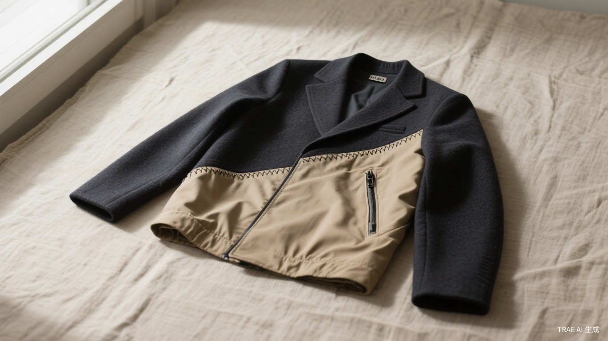
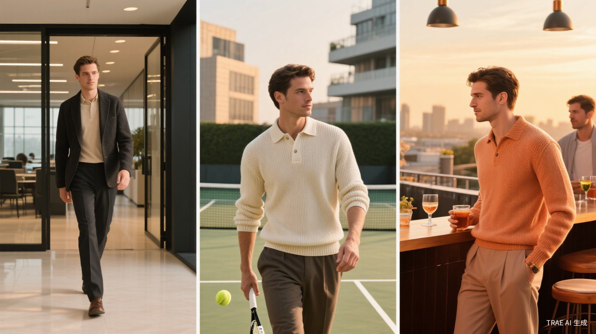
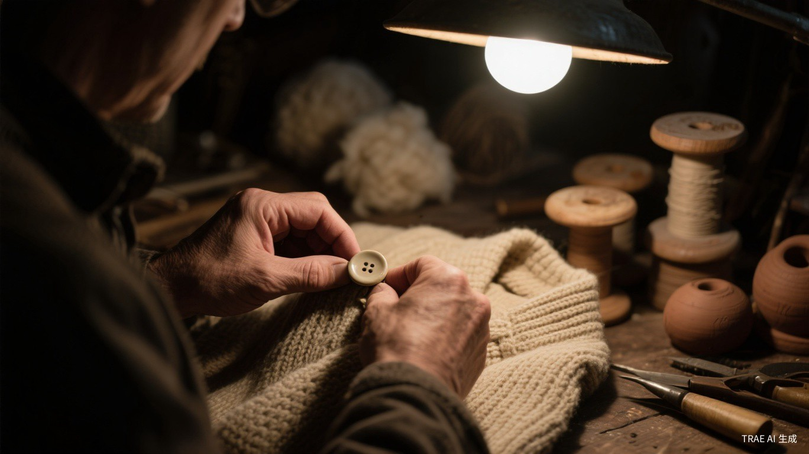
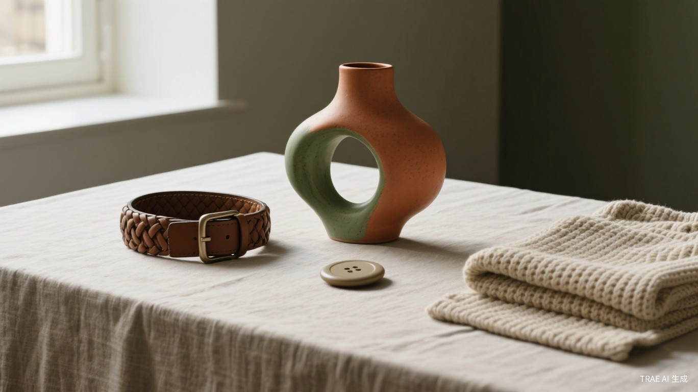

The Hybrid Jacket
Every brand needs its Puzzle bag. This is ours.
When I joined Loewe, I did not start with a collection. I started with an object. The Puzzle bag. One item that contained the entire argument: that leather could behave like fabric, that geometry could feel organic, that a bag could be a sculpture you carry. TRIO needs the same thing. Not a logo. Not a slogan. An object that argues.

The Hybrid Jacket is half charcoal wool blazer, half sand-colored technical windbreaker. The two halves meet at a diagonal seam that runs from shoulder to hem, hand-stitched with visible thread. It is not "reversible" in the cheap sense. It is two garments that have decided to coexist. Wear the wool side forward for a meeting. Wear the technical side forward for the court. Or wear it as it is — the seam exposed, the contradiction celebrated.
This jacket is not a solution to a problem. It is a question: Why did we ever believe that a man must choose between being dressed and being free?
I put this object at the beginning of the Manifesto because everything else flows from it. The brand is not an idea in search of form. It is this form, and the ideas it generates.
Clothes Have No
Business Being This Rational
Why should a blazer panic at the sight of a tennis court? Why should a polo shirt apologize for entering a meeting room?
I have always believed that the most interesting things happen at the edges, where categories blur and rules dissolve. At Loewe, I put a rose on a shoe heel. At JW Anderson, I made a coat that looked like a duvet. Not because it was practical. Because it made people feel something.
TRIO starts with a simple provocation: the modern man does not live in compartments. His morning begins with coffee and emails, his afternoon with a backhand down the line, his evening with a negroni and conversation. Three scenes. One day. One body. Why should he change his skin three times?

This is not "versatile clothing." That phrase belongs to marketing decks. This is something stranger and more honest: the recognition that a man's clothes should understand his life better than he does. They should anticipate the pivot from desk to court to bar, not resist it.
And here is where I must be honest about my own history. When I started JW Anderson, I put men in ruffled shorts and women in oversized tailoring. People called it "gender-fluid." I called it obvious. The body does not care about the labels we give it. TRIO carries that same disregard for categories — not as a political statement, but as a design principle. A garment that works for a man moving through three scenes is, by definition, a garment that refuses to be one thing.
We are not designing for a man who has three different wardrobes. We are designing for a man who has one life, lived at speed, and refuses to let his clothes slow him down.
The Hand That Makes
the Cloth
Craft is not exclusivity. Craft is returning to the original thing. Every stitch carries a story of someone's hands.
When I visit the Loewe atelier in Madrid, I am not looking for perfection. I am looking for the slight irregularity that tells you a human being was there. The ceramic buttons on our 2024 collection were inspired by Lucie Rie — each one slightly different, each one alive. That is what I want TRIO to feel like: not manufactured, but made.

Charles Rennie Mackintosh, the Glasgow architect, taught me something crucial: radical ideas in craft eventually change everything else. He painted rooms white when everyone else used oak and velvet. A century later, his rooms still feel modern. TRIO's materials are chosen with the same conviction:
| Material | Origin | Why It Matters |
|---|---|---|
| Merino-Silk Knit | Italian mill, family-run since 1923 | The drape of silk, the resilience of wool. A blazer that breathes like a sweater. |
| Four-Way Stretch Cotton | Japanese technical weavers | Tailored silhouette with the hidden generosity of sportswear. You forget you're wearing it. |
| Hand-Dyed Linen | Portuguese atelier | Each batch carries subtle variation — the color of sand after rain, of stone at dusk. |
| Ceramic Buttons | Studio pottery, fired individually | Cool against the skin. Imperfect by design. No two alike. |
The Color of History
I spent hours in the British Museum's room of Chinese monochrome glazes. Those colors — celadon, oxblood, ivory — are more modern than anything on a Pantone chart. TRIO's palette is an homage:
These are not fashion colors. They are archaeological colors — excavated from ceramics, from stone, from the slow weathering of things that last. They do not shout. They settle.
The Craft Promise
Loewe has the Craft Prize. TRIO will have something smaller but no less serious: each season, one piece made in collaboration with a living craftsperson from a different country. Season One: a Portuguese ceramicist for the buttons. Season Two: perhaps a Japanese indigo dyer. Season Three: a Scottish knitter. The craftsperson's name appears on the label, alongside the garment's. This is not charity. This is conversation.

The Man Who Refuses
to Be One Thing
He does not have a work self and a weekend self. He has one self, expressed through many rooms.
I do not believe in target demographics. I believe in obsessions. The man who wears TRIO is obsessed with the in-between: the hour when work bleeds into play, the outfit that does not announce where you are going because it does not care. He is not a "consumer." He is a collector of moments.
He might be 28 or 42. He might code, or trade, or curate, or build. What unites him is not age or income. It is a restlessness with the expected. He has stood in front of his wardrobe at 7 AM and thought: Why do I need three different versions of myself today?
The most radical thing a man can do with his clothes is to stop apologizing for them. Stop explaining why the blazer is knit, why the trousers stretch, why the polo is oversized. Just wear it. Let the clothes do the talking. — Jonathan Anderson
I must say something here that I have learned the hard way. Even if you are hated, it is better than being ignored. My early collections were ridiculed. Men in ruffles? Absurd. But the ridicule meant they were seen. The worst fate for a designer is not criticism — it is silence. TRIO will make some people uncomfortable. The Hybrid Jacket will look wrong to someone who believes a blazer must be wool from collar to hem. Good. Wrong is the first step toward new.
Accessibility, Not Democracy
I have worked with Uniqlo for eight years. I know the tension between making something beautiful and making it available. TRIO sits in the space between the disposable and the unattainable:
Not cheap. Not precious. Worthy of the life you are living.
A Curated Wardrobe,
Not a Product Line
Each piece is an independent object. Worn together, they become a conversation. And every conversation needs one voice that does not belong.
I think of dressing as curation. You do not wear an outfit. You assemble a dialogue between textures, proportions, histories. TRIO's core collection is designed as six independent voices that harmonize without agreeing:
The object that contains the entire argument. Half tailoring, half sport. The seam is the philosophy made visible. This is where TRIO begins.
The structure of tailoring, the touch of knitwear. Wear it with trousers for a meeting, with shorts for a Saturday. It does not judge either choice.
The silhouette of formality, the secret of stretch. Cuffed for the court, uncuffed for the office. The same pair, two different men.
Tennis heritage, architectural scale. The collar says country club. The cut says art school. The most polite rebellion in menswear.
The simplest piece, the hardest to perfect. Thin enough to layer, substantial enough to stand alone. The foundation everything else rests on.
Light as wind, sharp as dusk. The piece you reach for when the day turns into evening and you have no intention of going home to change.
The Irrational Edge
Every season, the collection includes one piece that does not belong. Not as a separate "Lab." Not as an experiment. As a necessary disruption within the family. The irrational edge is what keeps the rational center honest. Without it, the collection becomes a formula. And formulas are the death of fashion.
Tennis String Vest
Woven from actual racket string. Unwearable for most. Unforgettable for all. The piece that makes people ask: is this serious?
The 3/4 Shirt
Dress-length shirt, worn as outerwear. A garment that questions where clothing ends and architecture begins.
Ceramic Button Cardigan
Each button thrown on a potter's wheel, glazed by hand, fired once. No two closures alike. The craftsperson's name on the label.
Day Shift:
A Single Day, Undressed
The first collection is not a season. It is a day. From coffee to court to candlelight, without a single change of clothes.
I do not believe in fashion shows as entertainment. I believe in them as experiences you cannot forget. TRIO's debut will not happen on a runway. It will happen in a space that already contains all three worlds — a converted tennis club, where the court becomes a conference room becomes a bar. The audience will move through the day as the clothes do: seamlessly, without announcement.
The model — and I use that word carefully — will not change clothes. He will simply turn. The Hybrid Jacket reversed. The trousers cuffed. The polo tucked, then untucked. Transformation without removal. This is the essence of TRIO: not that you own many things, but that the things you own contain multitudes.
The Five Pieces of Day Shift
| Piece | Concept | The Hour It Belongs To |
|---|---|---|
| Morning Coat | A cardigan that dreams of being a blazer. A blazer that dreams of being a cardigan. | 7 AM — The first coffee, the first decision |
| Noon Trousers | The appearance of formality, the reality of stretch. Deception as comfort. | 12 PM — The meeting that could have been an email |
| Tennis Polo | Sportswear DNA, architectural scale. The collar says country club. The cut says art school. | 4 PM — The backhand you did not plan to hit |
| Sunset Jacket | Weightless armor for the transition. The piece that says: the night is young, and so am I. | 7 PM — The drink that turns into dinner |
| Midnight Tee | Merino against the skin at the end of a long day. The simplest luxury: being understood. | 11 PM — The quiet before tomorrow |
Do not try to please everyone. Some will say it is not formal enough for the office, not athletic enough for the court, not loud enough for the bar. They are right. It is none of those things. It is something else entirely. And for the man who recognizes what that something is — there is nothing else he would rather wear. — Jonathan Anderson for TRIO
TRIO is not clothing for multiple occasions. It is clothing for one occasion: the occasion of being alive, moving through spaces, refusing to be categorized. The office does not own you. The court does not own you. The bar does not own you. Your clothes should not own you either.